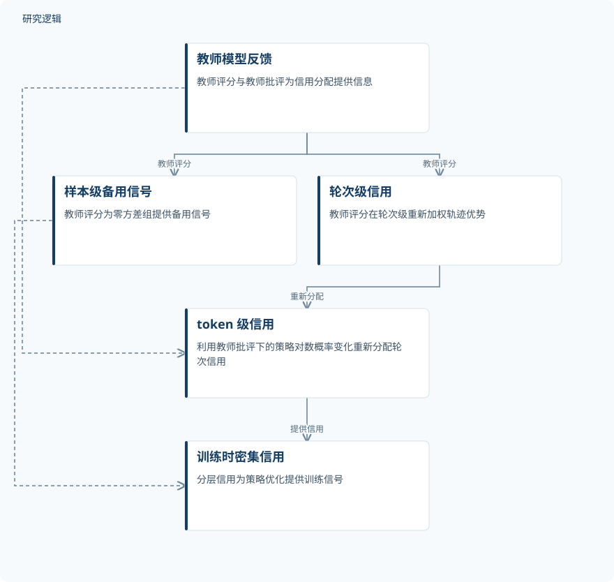

摘要解读
TRACE-GRPO：面向长时程智能体强化学习的教师精炼优势信用估计
TRACE-GRPO: Teacher-Refined Advantage Credit Estimation for Long-Horizon Agentic RL
解读更新 2026-11-27 22:10 · 依据公开摘要整理，未核验全文细节
长程任务中的大语言模型智能体，如何判断哪些决策真正影响了最终结果？TRACE-GRPO 尝试利用教师模型反馈细化训练时的信用分配，为理解智能体强化学习提供了一个视角。
文章目录
长程轨迹中的信用分配难题
组相对策略优化（GRPO）广泛用于大语言模型智能体的后训练，但摘要指出，轨迹级优势信号并不适合长程信用分配：当一组采样轨迹的奖励相同时，优势为零；否则，同一个标量会统一缩放轨迹中所有 token，难以区分哪些决策决定了结果。
将教师反馈转化为分层信用
TRACE-GRPO 将教师大语言模型的反馈转化为分层信用。对于奖励方差为零的组，教师评分提供样本级的备用信号；在轮次级，教师评分重新加权轨迹优势；在 token 级，方法利用教师批评下策略对数概率的变化，将轮次信用重新分配给 token。
摘要称，这种设计无需 token 级标注或学习得到的评论器，就能提供训练时的密集信用信号。作者还提出批评感知分页注意力（CAPA），通过复用轨迹 KV 缓存，降低以教师批评为条件的独立前向计算开销。
依据摘要整理的分层信用分配示意


仅概括摘要明确陈述的教师反馈、分层信用和训练环节，不代表论文原图。
下载 SVG图示关系说明
实线表示相邻阶段的信息流，虚线表示跨阶段联系或反馈。
教师模型反馈 → 样本级备用信号：教师评分；教师模型反馈 → 轮次级信用：教师评分；教师模型反馈 → token 级信用：教师批评；轮次级信用 → token 级信用：重新分配；样本级备用信号 → 训练时密集信用：提供信用；token 级信用 → 训练时密集信用：提供信用
任务成功率与计算开销
摘要报告，使用 Qwen2.5-7B-Instruct 时，TRACE-GRPO 在 ALFWorld 和 ScienceWorld 上分别达到 96.3% 和 73.4% 的成功率，优于较强的智能体强化学习基线。消融结果显示，样本、轮次和 token 三个信用层级带来了累积收益。
与在教师生成的成功轨迹上进行监督微调的比较表明，批评引导的策略优化带来了超出模仿的收益。摘要还称，CAPA 将独立的批评条件前向计算从约为普通 GRPO 一步的 2 倍，降至约为一个训练步骤的 5%。这一数字针对所述独立前向计算，不应直接理解为整体训练耗时的降幅。
摘要尚不能回答的验证范围
摘要没有给出样本规模、具体基线名单、各层级的单独收益或结果波动，因此仅凭摘要无法判断比较的完整范围与统计稳定性。摘要也没有说明该方法在其他模型、任务或更广泛场景中的验证范围；这不等于论文没有开展相关工作。
阅读启发：细看教师反馈如何作用
阅读启发：对于关注大语言模型智能体的读者，可进一步查阅论文中教师评分、批评与各层级信用分配的具体关系，以及与监督微调的比较设置，从而理解结果在何种条件下支持“超出模仿”的判断。
以上为本站阅读启发与建议，不是论文已验证的结论。